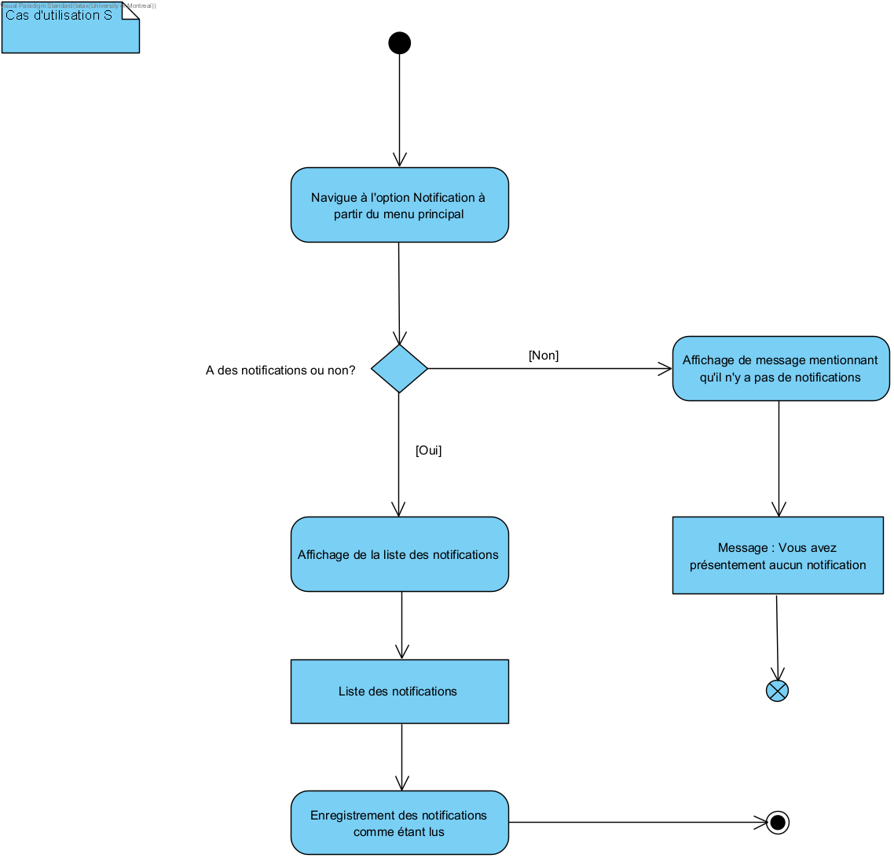

Plannification
Description brève du domaine et du problème
Le GEODES est un centre de recherche dans le domaine du génie logiciel. Il réunit plusieurs professeurs, chercheurs et étudiants qui collaborent ensemble sur divers projets, outils, publications d'articles et d'organisation d'événements. Le GEODES recherche une platforme qui complète déjà leurs outils existants. Pour cela, la plateforme, Roundtable, devrait être en mesure de (tel qu'exprimé par le client):
- Faire le suivi des membres et des activités de recherche du groupe
- Se souscrire à de multiples intérêts de recherche ou sujets particuliers
- Visualiser les informations de ces entités
- Formuler quelques requêtes pour explorer et manipuler ces relations
Présentation de l'échéancier et la distribution des taches
Semaine 1
- 17/05/: Fin de formation d'équipe
- 19/05: Brainstorm des questions d'interview pour la première semaine + envoyées à L-E
- 21/05: Création du répertoire HobbitsDevoirs
Semaine 2
- Identification des CUs, besoins fonctionnels et non-fonctionnels (fichier Définition du domaine.md): toute l'équipe
- 26/05: Continuation du brainstorm des questions d'interview pour la deuxième semaine + envoyées à L-E
- Apprendre GitHub
- Contexte et problèmes à résoudre (fichier Cadre du projet.md): toute l'équipe
- 28/05 Création de la branche Dev
Semaine 3
- 30/05: Fin du brainstorm des questions d'interview pour la troisième semaine + envoyées à L-E
- 01/06: Une première itération du prototype fonctionnel de fait en java.
- Répartition des tâches restantes
- Finaliser Cadre du projet et Définition du domaine: toute l'équipe
- Scénarios des CUs (fichier Livrables.md): Félix, Linda
- 04/06 Diagramme CU avec Visual Paradigm: Linda
- Analyse (fichier Analyse.md): Félix
- Prototype (images): Hadrien
- Mise en page du rapport HTML: Félix, Linda
- Révision du contenu et de la grammaire: Félix, Hadrien
- Prototype fonctionnel: Hadrien
Semaine 5
- 14/06: Ajout de tickets dans GitHub
- 19/06: Début des diagrammes d'activités
Semaine 6
- 23/06: Question de la semaine (au niveau des notifications par courriel) envoyée à L-E
Semaine 7
- 30/06: Création de nouvelles branches
- Révision des scénarios des CUs
- 02/07: Achèvement des diagrammes d'activités: Linda
- 01/07 - 02/07: Diagramme de classe complétée: Hadrien et Linda
- 01/07 - 05/07: Raffinement du prototype fonctionnel: Hadrien et Félix
- 02/07 - 05/07: Diagramme de séquence: Félix
- Tests, vérification des diagrammes et du prototype: Félix
Ordre des priorités de tâches
- Élaborer les questions d’interview pour recueillir le maximum d’information possible pour mieux cerner les besoins du client. Cette tâche est en priorité à chaque semaine considérant le fait qu’il y a une date limite pour les envoyer au client.
- Établir les besoins fonctionnels en faisant en autre une liste des cas d’utilisations (CUs) ainsi que les besoins non-fonctionnels.
- Recevoir du feedback sur les CUs considérant que le reste incluant le prototype découlent de ceux-là.
- Décrire les scénarios de chacun des CUs pour diriger le prototype.
- Modéliser le diagramme des cas d'utilisations pour avoir une bonne apperçu du problème.
- Commencer le prototype fonctionnel par petits itérations au cas ou les CUs doivent encore être modifiés et pour bien diviser les tâches.
- Mise en page du rapport par itérations pour offrir une meilleure visibilité des tâches restantes et des aspects à réviser.
- Apporter des révisions aux CUs et au prototype au fur et à mesure dans le processus de développement.
- Ajouter les événements dans la conception et l'implémentation.
- Modéliser le diagramme d'activités pour avoir une bonne compréhension du flux des activités.
- S'assurer que le code commence à valider les entrées dans le prototype.
- Faire la révision des CUs avec les nouvelles informations de l'énoncé 2.
- Élaborer le diagramme d'activités.
- Élaborer le diagramme de classes à l'aide de notre prototype fonctionnel.
- Élaborer le diagramme de séquence.
- Élaborer sur la justification du désign au niveau de la Conception.
- Tester le prototype fonctionnel et vérifier l'ensemble des diagrammes ainsi que le rapport.
- Faire le lien entre la vraie base de données et la plateforme Roundtable.
Présentation des hypothèses
- Le groupe de recherche a accès à un serveur puisqu'il héberge son site web.
- Le groupe de recherche a un moyen de distribuer l'application à ses membres puisqu'ils se rencontrent chaque vendredi.
- Les données privés devraient être protégées (ex. articles non publiés)
- Le système n'a pas besoin de supporter plus de 1000 utilisateurs.
Échanges avec client: Questions posées et réponses trouvées
Semaine 1
- À quelles questions les requêtes doivent-elles permettre de répondre ?
- Quelles sont les informations que vous aimeriez voir des entités sur la plateforme Roundtable?
- La difficulté de faire le suivi revient souvent. Quels sont les mécanismes de suivi recherché ?
Semaine 2
- Avez-vous des contraintes en général, tel que sur le plan matériel (serveurs, storage/espace, cloud..) par exemple?
- Est-ce que Roundtable doit offrir un système de messagerie et d’agenda simplifié, permettant un contrôle des échanges, des regroupements et une vision plus claire des suivis quotidiens?
Semaine 3
- Feedback sur les Cas d'Utilisations
Semaine 6
- Pouvez-vous clarifier plus sur les notifications par email? Si un membre veut cela par courriel, est-ce que c'est bien dans le Profil que le membre change son préférence? Et puis, est-ce que les préférences peuvent être différents pour chaque activité souscrit ou c'est un seul option de préférence pour toutes les activités souscrits. Finalement, si un membre est inscrit pour les notifications par email, est-ce qu'une notification est quand même affichée dans la plateforme Roundtable aussi, ou bien c'est l'un ou l'autre dépendamment des préférences du membre.
La première semaine, le client a spécifié les requêtes qu'il souhaite voir dans Roundtable. Il y en a plusieurs tels que les requêtes publiques (e.g. "Afficher la liste des membres", "Afficher la liste des outils publiques") et les requêtes administratives (e.g. supprimer un activité). Deuxièmement, il y a eu plus d'élaborations sur les informations des entités: par exemple, un article a un titre, une description et une date. Il possède un niveau de visibilité, un statut et bien plus. D'autres explications ont été apportés sur les projets ainsi que sur les outils. Ensuite, en ce qui concerne le suivi des activités, cela mentionne que les activités ont un professeur responsable, des intérêts assignés, un niveau de visibilité, des mots-clés et de plus, les membres souscrits recoivent une notification de l'activité.
Pour la deuxième semaine, il a été dit qu'il n'y a pas de contraintes en dehors de l'énoncé (c'est l'analyse qui élabore dessus). Puis, une clarification a été apporté à l'énoncé mentionnant que la plateforme Roundtable ne vise pas à remplacer les outils existants tels que Discord et le site web du GEODES, mais qu'il les complémente (e.g. donc, on n'a pas besoin créé un système de messagerie puisque le groupe continura à utiliser ce qu'ils ont en ce moment.)
Pour la troisième semaine, nous avons choisi de recevoir du feedback sur les cas d'utilisations, ce qui a permis de réaliser que plusieurs aspects comme les mots-clés et les niveaux de visiblité ne sont pas des CUs mais plutôt qu'ils font partis de la définition d'un activité même et interviennent lors de la manipulation des activités.
Finalement, pour la semaine 6, nous avons demandé de la clarification au niveau des notifications des activités souscrits par courriel. Modifier sa préférence pour recevoir le tout par courriel se fait dans la Gestion du Profil d'un membre. La configuration se fait pour l'ensemble des activités souscrits et non pour des activités en particulier. Et si un membre s'inscrit aux notifications par courriel, il peut quand même consulter ses notifications à travers la plateforme Roundtable.
Compréhension du domaine
Suite à nos rencontres avec les représentant du groupe GEODES et une familiarisation avec ses activités (énoncé du client, exploration de son site web, des projets, outils et articles), nous avons préparé un glossaire rassemblant les termes et expressions clés caractérisant l'environnement.
Glossaire
- Activité
- Opérations du groupe de recherche. Terme général pour définir l'ensemble des articles, outils et projets. Les activités ont un professeur responsable et un niveau de visibilité.
- Administrateur
- Rôle spécial. Il administre le système (attribution des rôles, validation des nouveaux membres, supression des activités obsolètes).
- Article
- Un article est une publication par des membres du GEODES. Il comporte un titre, un résumé et la date à laquelle il a été publié. Il peut avoir plusieurs auteurs et collaborateurs. Un article a un statut assigné (brouillon, prêt, soumis et publié). Par défaut, une fois publié, un article a un niveau visibilité public et peut contenir un lien vers la version PDF.
- Créateur d'une activité
- Membre qui a créé une activité donnée
- Fiche
- Ensemble des informations liées à une activité.
- GEODES
- Le GEODES est un centre de recherche au sein du DIRO dans lequel les membres collaborent sur différents sujets, que cela soit sur les activités liés au processus de dévelopment, l'application de méthodes pour évaluer les logiciels et dans les domaines d'affaires, l'utilisation de l'intelligence artificielle en génie logiciel.
- Intérêt
- Liste de sujets modifiable par les professeurs. Les intérêts sont associés aux activités et aux membres et permettent de rafiner les recherches.
- Membre
- Un membre est un des éléments du groupe de recherche. Il peut avoir le rôle d'administrateur, de professeur ou de simple membre.
- Mot-clé
- Mots associés aux activités par les créateurs de celles-ci.
- Mot de passe
- Pour des raisons de sécurité, le mot de passe servant à s'authentifier sur la plateforme devra respecter les critères suivants: il doit avoit au moins 8 caractères, 1 chiffre, 1 majuscule, 1 minuscule et 1 caractère spécial.
- Outil
- Un outil est un produit développé par les membres du groupe de recherche qui sert de démo ou de preuve de concept. Il peut être lié à des articles et est toujours lié à un code source.
- Professeur
- Les professeurs dirigent le groupe de recherche. Ils ont donc accès aux activités de recherche dont ils sont responsables. Chaque membre non professeur et non administrateur est associé à un professeur. Les professeurs ont un rôle associé dans le système.
- Profil
- Ensemble des informations liées à un membre tel que le nom d'un membre, ses coordonnés, ses préférences au niveau des champs d'intérêt de recherche/sujets particuliers, ses récentes publications, projets et outils. Celui-ci peut aussi présenter des ressources qu'il juge pertinentes à partager.
- Projet
- Un projet est une collaboration sur des travaux de recherche entre plusieurs partenaires et un professeur. Il comporte un titre, une description et la période désignée pour ce projet.
- Requête
- Une requête permet à l'utilisateur de générer de divers rapports (e.g. afficher la liste des membres, afficher la liste des outils) et compléter des tâches administratives (e.g. lecture des notifications, supprimer une activité) à travers la plateforme.
- Responsable d'une activité
- Union du créateur de l'activité et de son professeur associé.
- Rôle
- Un rôle est défini par un nom unique (PROFESSEUR, ADMINISTRATEUR, MEMBRE) et est associé à chaque membre par les administrateurs. Il détermine les permissions des utilisateurs.
- Roundtable
- Roundtable est le nom donné à la plateforme qui sera utilisée par le GEODES pour complémenter les outils que ce dernier utilise déjà. L'interface est en ligne de commande.
- Suivi
- La plateforme permet aux utilisateurs d'êtres à jour dans les activités survenant au sein du GEODES aux moyens de plusieurs fonctionalités de suivi. Elle permet l'ajout, la modification et la supression d'activités (i.e. Articles, Outils, Projets), la souscription à ces dernières ainsi qu'à l'inscription et la désincription des intérêts de recherche.
Modélisation du domaine
Cas d'utilisation

Scénarios
-
Nom: Authentification lors de la connexion en ligne
But: Un membre veut s'authentifier avec ses identifiants pour pouvoir avoir accès à la plateforme.
Acteurs principaux: Un membre, un professeur ou un administrateur
Préconditions: L'acteur a déjà un compte dans le système.
Postconditions: Le système n'est pas modifié après le scénario.
Scénario principal:
- L'acteur qui veut se connecter ouvre l'application Roundtable et arrive à la page d'accueil.
- L'acteur choisi l'option 1 "Service de connection".
- L'acteur entre son nom d'utilisateur (donc son address courriel) et son mot de passe dans le système.
- Le système vérifie les identifiants tapés par le membre.
- Le système vérifie que le statut du compte est valide.
- Si le système valide les identifiants and amène l'acteur au menu principal si ce dernier passe l'authentication.
4a. Le système rejecte les identifiants entrés par le membre en retournant un message d'erreur.
4a.1 L'acteur s'essaie de nouveau en reprenant de l'étape 2.
5a. Le système rejecte l'accès si le statut du compte est suspendu en retournant un message d'erreur.
5a.1 Le scénario se termine.
Nom: Création d’une activité dans la plateforme
But: Un membre veut ajouter une activité dans le système
Acteurs principaux: Membre
Préconditions : Le membre a un compte valide dans le système et est authentifié
Postconditions :
- Une nouvelle activité est enregistrée dans le système.
- Les membres souscrits aux sujets de l'activité ont reçu une notification si l'activité est visible.
- Les collaborateurs de l'activité ont reçu une notification. - Pour ceux qui ont la préférence, les membres recoivent aussi la notification par courriel.
Scénario principale :
- Le membre navigue dans le menu des activité en choissant l'option 1 à partir du menu principal.
- Le membre sélectionne l'activité qu'il désire: - Projet
- Le membre sélectionne l'option d'ajouter l'activité en question.
- Appel de cas: "Entrer des informations d'une activité".
- Le système affiche un message confirmant la création de l'activité.
- Le système propose à l'acteur de retourner au menu de l'activité choisie.
- Outil
- Article
NA.-
Nom: Entrer des informations d'une activité
But: Le créateur d'une activité ou son professeur associé souhaite spécifier les informations d'une activité nouvellement créée ou déjà existante.
Acteurs principaux: Créateur ou professeur associé de l'activité
Préconditions: L'acteur a déjà un compte et est déjà authentifié dans le système.
Postconditions:
- Les informations de l'activité sont enregistrées.
- Les membres souscrits aux sujets de l'activité ont reçu une notification si l'activité est visible.
- Les collaborateurs de l'activité ont reçu une notification.
- Pour ceux qui ont la préférence, les membres recoivent aussi la notification par courriel.
Scénario principal:
- Le système demande de taper une information (e.g. titre, auteurs) sur l'activité. Si l'information est déjà présente dans le système, est elle proposée à l'acteur.
- L'acteur entre l'information correspondante ou accepte l'information déjà présente.
- L'acteur entre un court descriptif de la modification de l'activité.
- L confirme la création ou modification de l'activité
- Le système enregistre l'activité et demande passe à l'élément suivant, puis passe à l'étape 4.
- Le système met à jour les accès de l'activité selon les collaborateurs, auteurs.
- Appel de cas: Envoi de notifications
3a. L'acteur décide de laisser le champs du court descriptif vide vu que c'est un champs optionnel.
3a.1 Le scénario continue par la suite à l'étape 4. 4a : Le membre annule la création de l'activité.
4a1: Le membre entre No au moment de la confirmation.
4a2: Le scénario se termine. -
Nom: Modification d’une activité (par créateur et professeur associé)
But: Le créateur de l'activité ou le professeur associé veut modifier les propriétés d'une activité. Cela peut être une activitée nouvellement créée.
Acteurs principaux: Créateur de l'activité ou le professeur
Préconditions: L'acteur principal a le droit de modifier l'activité et l'activité existe dans le système. L'acteur a déjà un compte et est déjà authentifié dans le système.
Postconditions:
- Les propriétés de l'activtié sont modifiées dans le système.
- Les membres souscrits aux sujets de l'activité ont reçu une notification
- Les collaborateurs de l'activité ont reçu une notification
- Pour ceux qui ont la préférence, les membres recoivent aussi la notification par courriel.
Scénario principal:- Le membre navigue dans le menu des Activités à partir du menu principal
- Le membre sélectionne l'activité qu'il désire: - Projet
- Le membre choisi l'option de modifier l'activité en question.
- Le membre choisi l'activité à modifier
- Appel de cas: "Entrer des informations d'une activité".
- Le système affiche un message confirmant la modification de l'activité
- Le système propose à l'acteur de retourner au menu principal
- Outil
- Article
NA.
Nom: Trouver un membre
But: Un membre souhaite trouver de l'information sur un autre membre.
Acteurs principaux: Un membre
Préconditions: L'acteur a un compte valide et est déjà authentifié dans le système.
Postconditions: Le système n'est pas modifié après le scénario
Scénario principal:
- Le membre navigue dans le menu vers la section des Membres
- Le membre demande d'afficher la liste des membres qui concordent à une recherche en tapant le nom ou par prénom avec l'option 2.
- Le système affiche le nom complet, l'adresse courriel et les intérêts des membres qui matchent les critères de recherche.
- Le membre retourne au menu.
2a. Le membre décide de faire sa recherche avec l'option d'afficher la liste de tous les membres avec l'option 1.
2a1. Le système affiche la liste de tous les membres incluant leurs noms complets, leurs courriels et leurs intérêts.
2a3. Le scénario reprend à l'étape 4.
2b. Le membre décide de recherche le profil complet d'un membre à la place en chosissant l'option 3 en tapant nom et prénom.
2b1. Le système affiche le profil complet du membre (noms, prénoms, adresse courriel, numéro de téléphone, intérêts, 5 derniers articles dont il est auteur, projets publics et outils publics.)
2b2. Le scénario reprend à l'étape 4.
2c. Le membre décide de recherche un membre en tapant un intérêt avec l'option 4. 2c1. Le système affiche la liste des membres reliés à l'intérêt en question. 2c2. Le scénario reprend à l'étape 4.
3a. Le membre ne trouve pas le membre qu'il cherche.
3a1. Le membre se réessaye en retournant à l'étape 2.
Nom: Trouver une activité (articles, projets ou outils)
But: Un membre cherche de l'information sur une activité ou une activité en consultant la liste des activités publics.
Acteurs principaux: Un membre
Préconditions: L'acteur a un compte valide et est déjà authentifié dans le système.
Postconditions: Le système n'est pas modifié après le scénario
Scénario principal:
- Le membre navigue dans le menu vers la section des activités et choisit entre: Aritcle, Projet, Outil.
- Le membre choisit d'abord d'afficher la liste des activités publics du type choisit.
- Le système affiche la liste des activités publics avec leurs informations associés (e.g. titre, auteur)
- L'acteur retourne au menu
2a. L'acteur veut faire une recherche par intérêt à la place et choisit l'option pour cela.
2a1.Le système affiche la liste des intérêts.
2a2. L'acteur tape l'intérêt voulu.
2a3. Le système valide l'intérêt.
2a4. Le système affiche la liste des activités ratachés à l'intérêt.
2a5. Retour à l'étape 4.
3a. L'acteur veut plus de détails sur une activité.
3a1. L'acteur entre l'option faire une recherche
3a2. Appel de cas: "Rechercher une activité"
3a3. Retour à l'étape 3 avec la liste qui correspond aux résultats de la recherche.
Nom: Afficher la fiche d'une activité
But: Un membre souhaite voir les détails d'une activité
Acteurs principaux: Un membre
Préconditions: L'acteur a un compte valide, est authentifié, il a sélectionné l'activité concernée.
Postconditions: Le système n'est pas modifié après le scénario
Scénario principal:
- L'acteur navigue au menu des Activités et choisit la recherche de fiche d'activité (option 4)
- L'acteur tape le titre/nom de l'activité.
- Le système affiche la fiche complète de l'activité incluant les informations associés à ces dernières (e.g. titre, résumé).
NA.- L'acteur navigue au menu des Activités et choisit la recherche de fiche d'activité (option 4)
Nom: Rechercher une activité
But: Un membre cherche de l'information sur une activtié (article ou projet) dont il connait une des propriétés.
Acteurs principaux: Un membre
Précondition: L'acteur a un compte valide et est authentifié dans le système.
Postcondition: Le système n'est pas modifié après le scénario.
Scénario principal:
- L'acteur navigue au menu des Activités et choisit entre Article et Projet
- L'acteur entre les éléments de recherche 2.1 Pour un article, les éléments de recherche disponibles sont :
- Le système affiche la liste des activités correspondant aux éléments de recheche
- Titre
- Auteur
- Mot-clé
2.2 Pour un projet, les éléments de recherche disponibles sont :
- Titre
- Responsable
3a. Aucune activité ne correspond aux éléments entrés 3a1. Le système affiche qu'il n'a rien trouvé et retourne à l'étape 1.- Nom: Création d'un membre (soumission des informations)
But: Le membre du GEODES cherche à se créér un compte dans le système ce qui lui donnerait accès à la plateforme par la suite.
Acteurs principaux: Le membre
Acteurs secondaires: Un administrateur
Préconditions: Le membre ouvre l'application Roundtable et arrive à la page d'accueil.
Postconditions: Il y a un membre additionnel dans la base de données du système.
Scénario principal:
- Le membre chosi l'option 2 (service d'enregistrement) pour se créér un compte.
- Le membre tape son nom.
- Le membre tape son prénom.
- Le membre tape son titre.
- Le membre entre dans le système son responsable (donc un professeur ) qu'il a choisit
- Le système valide le nom du responsable entré.
- Si le nom du responsable est bon, le membre entre ensuite son addresse courriel.
- Le système valide le courriel à savoir s'il existe déjà un compte avec le courriel entré ou non.
- Le membre se créé un mot de passe.
- Le système vérifient que le mot de passe entrée est conforme au règles de sécurité (e.g. le mot de passe doit avoir au moins 8 caractères, 1 chiffre, 1 majuscule, 1 minuscule et 1 caractère spécial)
- Le membre entre son numéro de téléphone.
- Le membre ses liens, ressources diverses (e.g. réseaux sociaux).
- Le membre entre ses intéréts.
- Le système valide que les intérêts existent bien dans la base de donnée.
- Le membre confirme la création de son compte.
- Le système créé un compte, qui a le statut EN_ATTENTE, et affiche un message au niveau du succès sur la création du compte.
- Le système envoit un courriel de confirmation et une notification aux administrateurs
- Appel de cas: "Valider l'inscription d'un nouveau membre".
- Le membre peut maintenant accéder à la plateforme.
6a. Le système rejecte le nom de responsable entré en affichant un message d'erreur.
6a1. Le membre se réessaie en se reprenant de l'étape 4.
8a. Le système rejecte l'addresse courriel entré en affichant un message d'erreur.
8a1. Le membre se réessaie en se reprenant de l'étape 6.
10a. Le système rejecte le mot de passe créé en affichant un message d'erreur.
10a1. Le membre se réessaie en se reprenant de l'étape 8.
14a. Le système rejecte l'intérêt créé en affichant un message d'erreur.
14a1. Le membre se réessaie en se reprenant de l'étape 12.
15a. Le membre ne confirme pas la création du compte.
15a1. Le scénario prend fin.
18a. L'administrateur ne valide pas le compte.
18a1. Le scénario se termine.
Nom: Assigner un rôle à un compte
But: un administrateur a le pouvoir d'assigner le role d'un membre lors de la creation du compte membre. Le membre peut etre soit
un membre soit un membre, soit un professeur, soit un administrateur.
Acteurs principaux: Administrateur
Acteurs secondaires: Le membre
Préconditions: le membre doit faire une demande de creation de compte. L'admin a un compte valide et est authentifié dans le système.
Postconditions: affectation du role dans la base de donnee du membre
Scénario principal:
- Si le membre en question est nouveau, Appel de cas: "Valider l'inscription d'un nouveau membre".
- Toujours dans l'interface, l'administrateur rentre choisi le nouveau role à affecter.
- L'admin confirme sa modification.
1a. Si le membre n'est pas nouveau, l'admin utilise l'option Gestion Membre.
1a.1 L'admin utilise l'option Modifier Role.
1a.2 L'admin rentre l'id (mail) du membre en question.
1a.3 L'admin rentre choisi le nouveau role a affecter.
1a.4 L'admin confirme sa modification.
2a. si le numero affecte au nouveau role est introuvable, le système redemandera un nouveau choix.
Nom: Valider l'inscription d'un nouveau membre
But: Approuver l'inscription d'un membre au système.
Acteurs principaux: Un administrateur
Préconditions: L'administrateur a déjà soumis ses informations dans le système (donc le compte est déjà créé).
Postconditions: Le statut d'un compte change dans la base de données simplement.
Scénario principal:- L'admin utilise l'option Gestion Membre.
- L'admin utilise l'option Nouveau membre.
- L'admin rentre l'id (mail) du membre en question.
- L'administrateur change le statut du compte vers VALIDE.
- L'administrateur confirme le changement dans le système.
4a. L'administrateur ne valide pas le compte selon certains circonstances (par exemple, le professeur choisi a récemment quitté le groupe).
4a.1 L'administrateur contacte le membre pour faire un suivi et rectifier l'inscription si nécéssaire.
4a.2 Le scénario se termine.
4b. Si l'id est introuvable, le systeme redemandera un id.
4b.1 L'admin reprend de l'étape 3.
Nom: Réactiver un compte
But: Réactiver un compte pour que le membre puisse y avoir accès de nouveau.
Acteurs principaux: Un administrateur
Préconditions: Le membre a déjà exprimé son intérêt au niveau de réactiver son compte avec un des administrateurs, qui est d'accord avec cette décision. L'administrateur a un compte valide et est authentifié dans le système.
Postconditions: Le statut d'un compte change dans la base de données simplement.
Scénario principal:
- L'admin utilise l'option Gestion Membre.
- L'admin utilise l'option Modifier Membre.
- L'admin rentre l'id (mail) du membre en question.
- L'administrateur change le statut du compte vers VALIDE.
- L'administrateur confirme le changement dans le système.
4a. si l'id est introuvable, le systeme redemandera un id.
4a.1 L'admin reprend de l'étape 3.
Nom: Suspendre un compte
But: Désactiver un compte si un membre quitte le GEODES.
Acteurs principaux: Un administrateur
Préconditions: Le membre en question a déjà quitté le groupe.
Postconditions: Le statut d'un compte change dans la base de données simplement. L'administrateur a un compte valide et est authentifié dans le système.
Scénario principal:- L'admin utilise l'option Gestion Membre.
- L'admin utilise l'option Modifier Membre.
- L'admin rentre l'id (mail) du membre en question.
- L'administrateur change le statut du compte vers SUSPENDU.
- L'administrateur confirme le changement dans le système.
4a. si l'id est introuvable, le systeme redemandera un id.
4a.1 L'admin reprend de l'étape 3.
Nom: Supprimer une activité
But: Enlever un activité (article, projet, outil) du système si cela est jugé pertinent de le faire (e.g. par exemple, il y a un doublon d'un activité entré par erreur).
Acteurs principaux: Un administrateur
Préconditions: Il faut que l'activité en question existe dans la base de données et les parties prenantes (membre, professeur, administrateur concernés) en ont déjà discuté et confirmé la décision de supprimer l'activité du système. L'administrateur a un compte et est déjà authentifié dans le système.
Postconditions: Une activité est supprimée de la base de données. Un notification est envoyé aux membres souscrits avisant de la supression.
Scénario principal:- L'administrateur fait une requête dans le système pour supprimer l'activité du système.
- L'administrateur tape un court descriptif expliquant la supression de l'activité.
- L'administrateur confirme le changement.
- L'administrateur avise que cela a été supprimée avec succès avec tout partie prenante (si nécessaire).
- Appel de cas: Envoi de notifications
2a. L'administrateur décide de laisser le champs du court descriptif vide vu que c'est un champs optionnel.
2a.1 Le scénario continue par la suite à l'étape 3.
Nom: Ajouter des intérêts
But: Ajouter un champs d'intérêt dans la liste d'intérêts de recherche / sujet particuliers au système.
Acteurs principaux: Un professeur
Préconditions: Le professeur a un compte valide et est déjà authentifié dans le système.
Postconditions: Il y a un intérêt additionnel dans la base de données.
Scénario principal:
- Le professeur sélectionne l'option 3 - Gestion Intérêt.
- Le professeur sélectionne l'option 2 - Afficher un intérêt
- Si l'intérêt n'existe pas déjà dans le système, le professeur fait une requête pour l'ajouter à la liste.
- Le professeur confirme le changement.
1a. Le professeur veut d'abord vérifier si l'intérêt existe.
1a.1 Appel de cas: "Afficher la liste des intérêts".
3a. L'intérêt existe déjà.
3a.1 Le scénario se termine.
Nom: Modifier des intérêts
But: Modifier un champs d'intérêt dans la liste d'intérêts de recherche / sujet particuliers au système.
Acteurs principaux: Un professeur
Préconditions: Le professeur a un compte valide et est déjà authentifié dans le système.
Postconditions: Il y a une modification dans la base de données au niveau de ce intérêt.
Scénario principal:- Le professeur sélectionne l'option 3 - Gestion Intérêt.
- Le professeur sélectionne l'option 2 - Modifier un intérêt
- Si l'intérêt existe dans le système, le professeur fait une requête pour le modifier.
- Le professeur confirme le changement.
1a. Le professeur veut d'abord trouver l'intérêt qu'il cherche à modifierexiste pas dans le système.
1a.1 Appel de cas: "Afficher la liste des intérêts".
3a. L'intérêt n'existe pas dans le système.
3a.1 Appel de cas: "Ajouter des intérêts" (si le professeur veut continuer)
Nom: Supprimer des intérêts
But: Enlever un champs d'intérêt dans la liste d'intérêts de recherche / sujet particuliers au système.
Acteurs principaux: Un professeur
Préconditions: Le professeur a un compte valide et est déjà authentifié dans le système.
Postconditions: Il y a un intérêt de moins dans la base de données.
Scénario principal:- Le professeur sélectionne l'option 3 - Gestion Intérêt.
- Le professeur sélectionne l'option 3 - Supprimer un intérêt
- Si l'intérêt existe dans le système, le professeur fait une requête pour supprimer l'intérêt de la liste.
- Le professeur confirme le changement.
1a. Le professeur veut d'abord vérifier si l'intérêt existe.
1a.1 Appel de cas: "Afficher la liste des intérêts".
3a. L'intérêt n'existe pas dans le système.
3a.1 Le scénario se termine.
Nom: Modification du compte pour chaque membre:
- Profil
- Activités souscrits
- Intérêts
But: un membre peut modifier toute les informations sur lui et sur ce qu,il aime sur l'application
Acteurs principaux: Membre (tout rôle confondu)
Préconditions: Un membre de statut actif et est déjà authentifié dans le système.
Postconditions: Modification des donneées de profil et activite.
Scénario principal:- Le membre utilise l'option Gestion Profil.
- Le membre utilise l'option modifier mon profil.
- Le membre choisi la categorie à modifier
- Le membre change les données.
- Le membre confirme tout changement
4a. Si la categorie est les intérêts, il peut ajouter ou supprimer
4b. Si la categorie est les activités, il peut seulement en retirer
4c. Si le membre n'a pas d'activités souscrits
Nom: Lecture des notifications par les membres, visualisation de l'historique
But: Un membre souhaite se tenir à jour des changement récents des activités
Acteurs principaux: Un membre
Préconditions: Le membre a un compte valide dans le système et est authentifié
Postconditions: Le système n'est pas modifié
Scénario principal:- Le membre utilise l'option Notifications
- Le système affiche la liste des notifications. Chaque notification inclut: - Le nom ou le titre de l'activité
- Le système met enregistre les notifications comme lues.
- La date de l'action (création, modification ou supression)
- L'acteur de l'action
- Un court descriptif décrivant l'action
2a. Le membre n'a aucun notification. 2a1. Le système affiche un message comme quoi il n'y a rien à afficher. 2a2. Le scénario se termine.
Nom: Afficher la liste des intérêts
But: Voir la liste des champs d'intérêts de recherche/ de sujets particuliers pour pouvoir par la suite faire des modifications si nécessaire.
Acteurs principaux: Un professeur
Préconditions: Le professeur a un compte valide dans le système et est authentifié
Postconditions: Le système n'est pas modifié après le scénario.
Scénario principal:- Le professeur sélectionne l'option 3 - Gestion Intérêt.
- Le professeur sélectionne l'option 1 - Afficher tous les Intérêts des données générales
- Le système affiche la liste des intérêts dans le système. Les éléments suivants sont affichés pour chacun des intérêts: - Titre
- DescriptifNA.
Nom: Envoi de notifications
But: Pour tout ajout, modification et supression sur un activité, qui doit avoir Publique comme visibilité, les membres souscrits recevoient un message à travers la plateforme leurs avisant des changements apportés. Il existe aussi la préférence des notifications par courriel.
Acteurs principaux: Un membre, un professeur ou un administrateur
Préconditions: Doit avoir tout juste complété soit un ajout, une modification ou une supression sur une activité et la visibilité de cette dernière doit être publique.
Postconditions: Notifications envoyés via la plateforme et par courriel pour ceux qui ont opté pour cette préférence.
Scénario principal:
- Le système envoit une notification dans la plateforme au sujet des changements apportés à tous les membres souscrits à l'activité en question, aux collaborateurs ainsi qu'au professeur responsable.
- Pour ceux qui ont opté pour cette préférence, les membres recoivent aussi une notification par courriel.
NA.
Analyse
Notre analyse préliminaire nous a permis d'élucider les besoins et risques suivants...
Risques
- Perte des données
Il pourrait avoir un incendie dans l'immeuble où sont stockées les données ou tout autre problème qui rendrait les données sur les disques durs innaccessibles. Il faudrait alors entrer à nouveau l'information et l'historique des modifications serait perdu.
- Serveur crash et n'est plus responsif.
Une panne de courant ou d'autres problèmes liés à l'alimentation en énergie des serveurs pourrait causer une inactivité du système. Les clients ne seraient plus capable d'intéragir avec celui-ci.
- La connexion réseau du serveur est instable et/ou le serveur est injoignable
Un problème avec le fournisseur internet ou la carte du réseau pourrait rendre le serveur non joignable. Les clients ne seraient plus capable d'intéragir avec celui-ci.
- Un utilisateur (administrateur compris) perd son mot de passe
Le membre n'a plus accès a son compte.
- Un utilisateur se fait voler son mot de passe
Les données privées de l'utilisateur sont alors compromises. Si l'utilisateur est un professeur ou un administrateur, une plus grande partie du système est compromise (gestion des intérêts et des membres).
Exigences non-fonctionnelles
- Utilisabilité
Lisible et rapide: Affichage des actions possibles dans le logiciel simple. Possibilité de faire des retours de page.
- Fiabilité
Les données devront être persistées quelque part (ex. base de données sur le serveur web)
- Performance
- Système de notifications en temps réel : une connexion en continue entre le client et le serveur ou un questionnement périodique du client est nécessaire.
- Le temps de réponse du serveur qui répond aux requêtes : doit être moins d'une seconde.
- Le système devra être accessible 24/7 (99.9% du temps).
- Les échanges entre le client et le serveur sont signés et encryptés puisque les données sont privées.
- Les membres s'authentifient avec un mot de passe.
- Maintenabilité
Doit nécessiter peu de maintenance puisque l'activité principale est la recherche.
- Implémentation
- Développé en Java.
- Objet orienté (pour la maintenabilité)
- Interface
Interface en ligne de commandes.
- Opération
Administrateur doit être informé d'une nouvelle inscription
- Packaging
L'application doit être distribuée sur quel OS ?
- Légal
Comme c'est un outil privé, il n'y a pas d'enjeu ici.
Matériels nécessaires
Description et justification des besoins matériels du projet...
- Selon notre hypothèse, le client a certainement deja un serveur. Si ce serveur n'est pas disponible, il en faudra un.
- 10 Go suffiront pour conserver les données de Roundtable sur le serveur
- Au moins 2 cpu sur le serveur
- 4 à 8 Go de mémoire pour la base de données
- Il est nécessaire d'avoir un moyen de distribuer l'application client (qui communique avec le serveur). Cela peut probablement être fait à travers Discord ou une clée USB échangée lors des rencontres du vendredi.
Contraintes
Les données sont sauvegardées sur le serveur dans une base de données relationnelle. Ces données doivent être accessibles du moment qu'internet est accessible. Étant donné que le groupe GEODES n'a pas plus de quelques dizaines de membres, il n'y a pas d'enjeu de mise à l'échelle. Une connexion fiable à internet sera toutefois nécessaire pour assurer un service continu.
Le client a seulement l'application client sur son ordinateur. Celle-ci ne sauvegarde aucune donnée sur l'ordinateur du client.
Présentation de nos classes selon le modèle d'objet
Nos classes d'entités incluent:
- Activité, une classe abstraite
- Article, une sous-classe d'Activité
- Outil, une sous-classe d'Activité
- Projet, une sous-classe d'Activité
- Intéret
- Role
- Membre
Nos classes d'interfaces incluent:
- InterfaceAdmin
- InterfaceMembre
- InterfaceProfesseur
Nos classes de controle incluent:
- ControleurInteret
- ControleurMainLoop
- ControleurMembre
- ControleurArticle
- ControleurOutil
- ControleurProjet
Modèle dynamique
Voici les diagrammes d'activités selon le modèle dynamique:
Authentification:
Boucle principale:
Création et modification d'activités:

Création d'un membre:

Modification du compte (le profil):
Trouver les membres et les activités:
Lecture de notifications:
Conception
Justifications du design
Nous avons adopté une architecture MVC (Model-View-Controller) pour le prototype livré. Le code est donc découpé en 3 modules :
- Entite : Contient les classe d'entité
- Controleur : Conteient les classes de contrôle.
- Interface : Donne accès aux différents controlleurs, selon le rôle de l'utilisateur.
Comme les controleurs et les interfaces sont uniques, les méthodes et attributs de ses classes sont statiques. Ceci n'est pas un gros enjeux puisqu'il serait simple de changer le tout pour des méthodes et attributs d'instance.
Au niveau des entitées, plus particulièrement des activités, comme celles-ci ont des attributs en commun, elles héritent de la classe abstraite Activite. Ainsi, si on voulait supporter un nouveau type d'activité (comme les événements du GEODES), on pourrait recycler cette classe.
Finalement, pour être pleinement MVC, il faudrait que les classes de contrôleurs n'intéragissent pas avec les entrées d'informations et l'affichage à l'écran. Nous en sommes conscient, cela pourrait être peaufiné au cours de la prochaine itération.
Sinon, en ce qui concerne les notifications par courriel pour les activités souscrits, nous avons choisi qu'au niveau de la création d'un compte, par défault, les membres recevoient les notifications uniquement dans la plateforme Roundtable. Si les membres désirents recevoir la version par courriel, ils peuvent opter pour cela via la page de Gestion de Profil.
En ce qui concerne les courts descriptifs d'un membre peut écrire quand il fait une action sur une activité, nous avons décidé que le système offre l'option d'ajouter le descriptif uniquement au moment de la modification ou la suppression d'une activité, ou pour le refut d'un article. Nous trouvons qu'il n'est pas nécessaire d'ajouter un descriptif au moment de l'ajout d'une activité.
Diagramme de classes
Diagrammes de séquence
Rechercher un article et afficher la fiche complète
Afficher la liste des activités associées à un intérêt
Modifier le statut d'un article